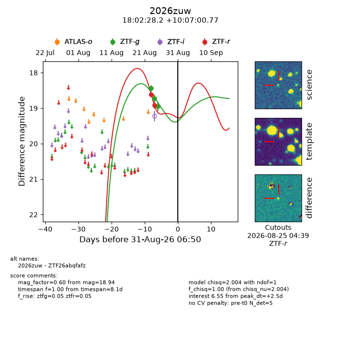
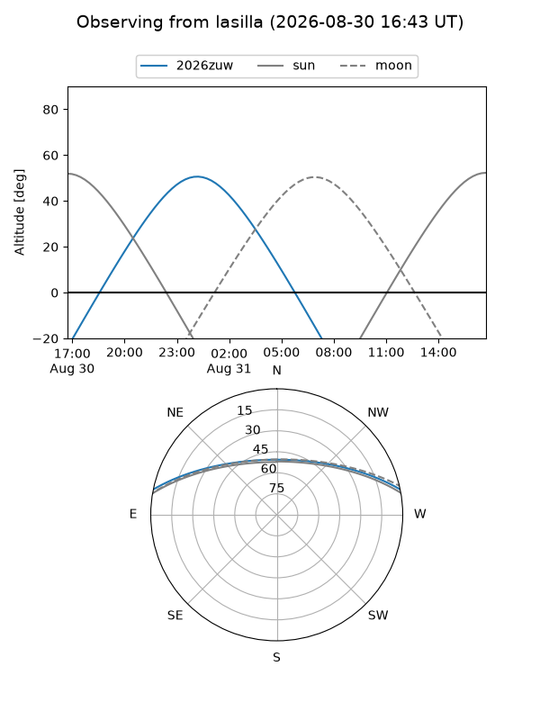
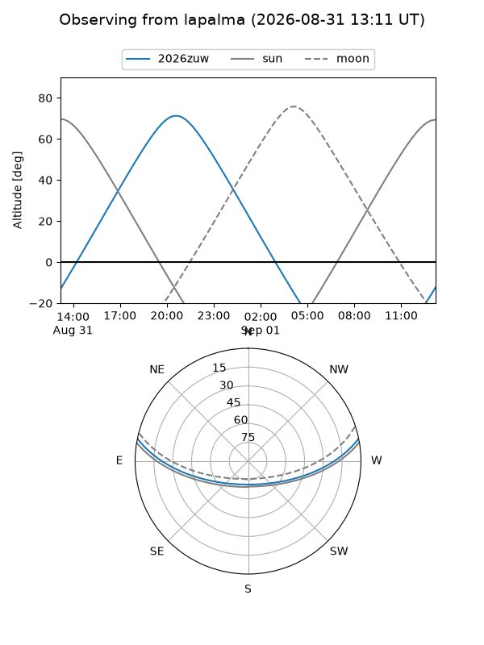
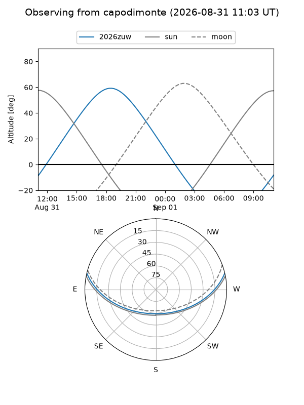
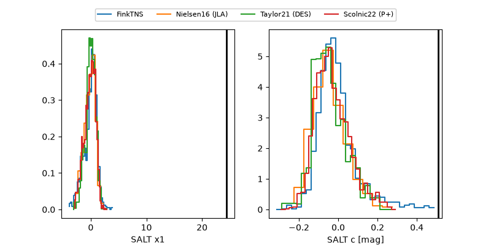

2026zuw
Target 2026zuw at 2026-08-31 18:32
Aliases and brokers:
FINK-ZTF: ztf.fink-portal.org/ZTF26abqfafz
Lasair-ZTF: lasair-ztf.lsst.ac.uk/objects/ZTF26abqfafz
ALeRCE-ZTF: alerce.online/object/ZTF26abqfafz
YSE-PZ: ziggy.ucolick.org/yse/transient_detail/2026zuw
TNS name: wis-tns.org/object/2026zuw
Direct TNS query: direct search
alt names
ZTF26abqfafz (ztf,fink_ztf)
2026zuw (tns,yse)
Coordinates:
equatorial (ra, dec) = 270.6173,+10.11688
equatorial (HMS+DMS) = 18:02:28.16,+10:07:00.77
galactic (l, b) = (36.5687,+15.41916)
Flags:
TNS type: nan
peak dt: +3.0
Photometry:
last ztfg=18.94, ztfr=18.91
3 ztfg, 2 ztfr detections
Lightcurve

Visibility



Additional plots
